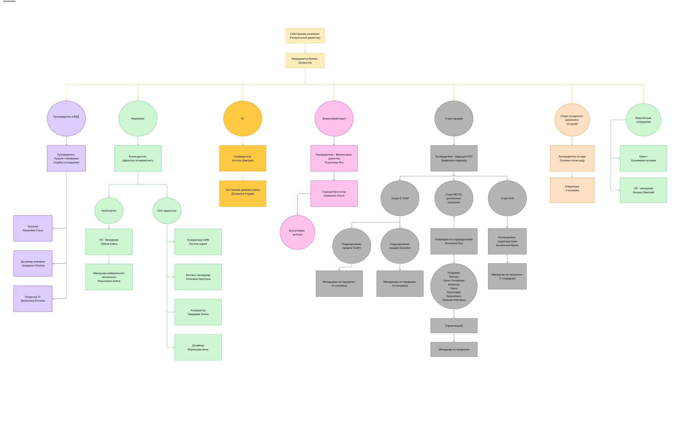
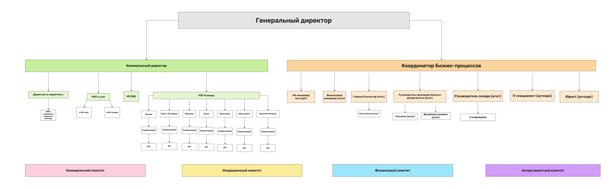

1. Общая характеристика компании
270,5 млн ₽
Поступления за H1 2026
~100 млн ₽
Неликвид на складе
Организационная структура (фактическая)

СОБСТВЕННИК (Генеральный директор / Никита Александрович)
│
└── Координатор бизнес-процессов (Стас) — бывший опер. директор
│
├── ПРОИЗВОДСТВО и ВЭД — Продукт-менеджер (подбор сотрудника)
│ ├── Технолог — Кошелева Ольга
│ ├── Дизайнер упаковки — Пузырёва Татьяна
│ └── Оператор 1С — Дементьева Наталья
│
├── МАРКЕТИНГ — Директор по маркетингу (Станкевич Влада, аутсорс/юрлицо)
│ ├── Performance — Глубина Елена
│ │ └── Менеджер реферальной программы — Фошанкова Алина
│ └── SEO / SMM-маркетинг
│ ├── Координатор SMM — Костюк Мария
│ ├── Контент-менеджер — Селянина Светлана
│ ├── Копирайтер — Хамдаева Элина
│ └── Дизайнер — Воронцова Анна
│
├── IT — Костюк Дмитрий (нештатный)
│ └── Системный администратор — Дозморов Андрей
│
├── ФИНАНСОВЫЙ ОТДЕЛ — Финансовый директор Родионова Яна
│ ├── Главный бухгалтер — Смазкина Ольга
│ └── Бухгалтерия — аутсорс
│
├── ОТДЕЛ ПРОДАЖ — Руководитель / ведущий РОП Трифонова Надежда
│ ├── Отдел E-COM → сайт (4 менеджера) + онлайн (4 менеджера)
│ ├── Отдел RETAIL (розничные шоурумы) — Игнатенко Яна
│ │ └── Шоурумы: Москва, СПб, Воронеж, Курск, Краснодар,
│ │ Красноярск, Нижний Новгород → управляющий + менеджеры
│ └── Отдел B2B — Былинкина Ирина → менеджеры по продажам
│
├── ОТДЕЛ СКЛАДСКОГО ХРАНЕНИЯ и ОТГРУЗКИ — Солянин Александр
│ └── Кладовщики — 3 человека
│
└── ВНЕШТАТНЫЕ СОТРУДНИКИ
├── Юрист — Еромкина Наталья
└── HR-менеджер — Аношко Дмитрий
Каналы продаж
| Канал | Описание | Статус |
|---|
| ECOM (сайт + онлайн) | 2 сайта + соцсети, 8 менеджеров | Стабильно |
| Розница | 7 шоурумов (было 13) | Просадка |
| B2B / ОПТ | Дилеры, опт, 3–4 менеджера | Критично |
Продуктовая линейка
| Параметр | Значение |
|---|
| Общее кол-во SKU | ~2000 (с учётом всех брендов) |
| Реально продающихся | ~200 |
| Флагманы (самопродающиеся) | 2 артикула |
| Неликвид на складе | ~75 млн ₽ (по цене продажи) / ~120 млн по РЦ |
| Контейнер из Китая | 1 раз в 3–4 месяца |
| Категории | Фены, машинки, триммеры, шейверы, ножницы, щипцы, плойки, брашинги, расчёски, аксессуары |
2. Сводный финансовый анализ компании
2.1. Резюме
По итогам первого полугодия 2026 года компания продолжает генерировать положительный денежный поток от основной деятельности, однако качество финансового результата ухудшилось по сравнению с аналогичным периодом 2025 года.
+5,0 млн ₽
Операционный денежный поток H1 2026
−3,2 млн ₽
Общий денежный поток H1 2026
1,58 млн ₽
ДС на конец периода
−16,0%
Снижение поступлений к H1 2025
Основные выводы:
- Операционная деятельность сформировала положительный денежный поток около 5,0 млн ₽
- При этом общий денежный поток компании оказался отрицательным: −3,2 млн ₽
- Фактический остаток денежных средств снизился примерно с 4,77 млн ₽ до 1,58 млн ₽
- Поступления от покупателей снизились по сравнению с 2025 годом
- Общая зависимость от личных средств собственника остаётся высокой
- Компания продолжает использовать заёмное финансирование
- Основной риск анализа — отсутствие данных о себестоимости проданных товаров и реальной стоимости/ликвидности товарных запасов
2.2. Динамика основных денежных показателей
| Показатель | 1П 2025 | 1П 2026 | Изменение |
|---|
| Денежные средства на начало периода | 4,77 млн ₽ | 2,88 млн ₽ | — |
| Всего поступлений | 321,88 млн ₽ | 270,52 млн ₽ | −16,0% |
| Всего выплат | 316,94 млн ₽ | 273,72 млн ₽ | −13,6% |
| Чистый приток / отток по ДДС | +4,94 млн ₽ | −3,19 млн ₽ | ухудшение на 8,13 млн ₽ |
| Денежные средства на конец периода | 7,83 млн ₽ | 1,58 млн ₽ | −79,8% |
2.3. Операционная деятельность
| Показатель | 1П 2025 | 1П 2026 |
|---|
| Денежный поток от операционной деятельности | +17,54 млн ₽ | −5,80 млн ₽ |
| Чистый операционный поток (после исключения внутренних оборотов) | +17,85 млн ₽ | +5,02 млн ₽ |
Для оценки бизнеса более корректным является показатель +5,02 млн ₽, поскольку он исключает внутренние перемещения денежных средств между счетами и кассами.
Основная деятельность компании в первом полугодии 2026 года продолжает генерировать положительный денежный поток. Однако его объём значительно снизился:
17,85 → 5,02 млн ₽
Снижение операционного потока
2.4. Денежная маржинальность
Если использовать поступления от покупателей как приближённый показатель денежной выручки, то денежный операционный поток 2026 года составляет ориентировочно около 3–4% от денежных поступлений от клиентов.
Для 2025 года аналогичный показатель был значительно выше — около 10–11%.
3–4%
Денежная маржинальность H1 2026
10–11%
Денежная маржинальность H1 2025
Упрощённо: Из каждых 100 ₽ денежных поступлений от основной деятельности в 2026 году после операционных денежных расходов оставалось примерно 3–4 ₽.
2.5. Постоянные и переменные расходы
Основные крупные статьи за 1П 2026
| Группа расходов | Сумма |
|---|
| Заработная плата | 45,9 млн ₽ |
| Аренда офиса, склада и шоу-рума | 14,3 млн ₽ |
| Маркетинг и реклама | ~11,9 млн ₽ |
| Налоги и обязательные платежи | ~15,9 млн ₽ |
| IT и программное обеспечение | ~5,4 млн ₽ |
| Консультационные и профессиональные услуги | ~4,3 млн ₽ |
| Итого основных структурных расходов | ~100 млн ₽ за полугодие |
Бизнес обладает значительной базой расходов, которые продолжают возникать даже при снижении продаж. Бизнес чувствителен к снижению выручки.
Переменные расходы
К основным переменным или условно-переменным расходам относятся: закупка товаров, доставка товаров из Китая, доставка по России, логистические расходы, упаковка, комиссии за эквайринг, возвраты покупателей, расходы на карго, отдельные расходы на привлечение клиентов.
2.6. Зависимость от собственника
| Операция | Сумма за 1П 2026 |
|---|
| Поступление личных средств предпринимателя | ~25,2 млн ₽ |
| Вывод денежных средств собственнику | ~19,8 млн ₽ |
| Дополнительные личные расходы | ~59 тыс. ₽ |
| Итоговый чистый поток по владельческой деятельности | +5,36 млн ₽ |
Собственник фактически обеспечил дополнительное финансирование компании. Компания не является полностью самофинансируемой.
2.7. Кредитная нагрузка
| Показатель | 1П 2026 |
|---|
| Получено кредитных средств | ~5,1 млн ₽ |
| Погашено тела кредитов | ~7,3 млн ₽ |
| Выплачено процентов | ~1,35 млн ₽ |
Компания погасила больше тела кредитов, чем привлекла новых средств — положительный фактор. Однако стоимость финансирования остаётся значимой: 1,35 млн ₽ процентов за полугодие.
2.8. Ликвидность
Остаток денежных средств на конец периода составляет около 1,58 млн ₽. При этом только крупные регулярные расходы компании составляют десятки миллионов рублей в месяц.
1,58 млн ₽
Денежный остаток на конец H1 2026
Напряжённая
Оценка ликвидности
Компания имеет положительный операционный денежный поток, но низкий запас свободной ликвидности. Без анализа запасов нельзя окончательно оценить реальную ликвидность компании.
2.9. Основные финансовые риски
- Риск 1. Снижение операционного денежного потока. Операционный поток после внутренних перемещений снизился с 17,85 млн ₽ до 5,02 млн ₽. Это основной негативный тренд.
- Риск 2. Высокая зависимость от собственника. Поступления личных средств собственника составили более 25 млн ₽. Необходимо понять, являются ли эти деньги временным финансированием, постоянным источником оборотного капитала, инвестициями или покрытием кассовых разрывов.
- Риск 3. Низкий денежный остаток. Остаток денежных средств существенно снизился. При текущем масштабе расходов даже несколько крупных непредвиденных платежей могут создать кассовый разрыв.
- Риск 4. Непрозрачная реальная маржинальность. Без подтверждённой себестоимости невозможно определить прибыльность бизнеса, прибыльность товарных групп, минимальную допустимую цену, эффективность рекламных каналов, реальный вклад оптовых и розничных продаж.
- Риск 5. Возможное смешение бизнес- и личных расходов. В таблице присутствуют ипотека, личные налоги и страховка, личные средства предпринимателя. Эти операции необходимо полностью исключить из оценки операционной эффективности бизнеса.
- Риск 6. Большое количество операций, требующих классификации. В таблице присутствуют строки «Прочее», «Прочие расходы», операции с личными средствами, перемещения между счетами, операции с кассой. Чем выше доля неопределённых операций, тем ниже надёжность финансового анализа.
2.10. Предварительная оценка финансового состояния
| Параметр | Оценка | Комментарий |
|---|
| Операционная деятельность | Удовлетворительно | Бизнес генерирует положительный операционный денежный поток |
| Прибыльность | Не может быть определена | Необходима корректная себестоимость реализованных товаров |
| Ликвидность | Напряжённая | Денежный остаток снизился, зависимость от внешнего финансирования высокая |
| Финансовая устойчивость | Средняя / требующая внимания | Зависимость от средств собственника, кредитных ресурсов, оборота товарных запасов |
| Денежный поток | Слабый | Операционный денежный поток сократился примерно на 70%+ |
2.11. Итоговый вывод
Компания не выглядит как бизнес, который находится в очевидном состоянии банкротства или полного операционного убытка. Основная деятельность генерирует положительный денежный поток. Однако финансовое состояние нельзя назвать устойчивым.
Главная проблема заключается не в том, что компания не генерирует деньги, а в том, что:
- Денежный поток от операционной деятельности существенно снизился
- Денежный остаток сократился
- Значительная сумма средств поступает от собственника
- Бизнес имеет кредитную нагрузку
- Существенная часть капитала может быть заморожена в товарных запасах
- Фактическая рентабельность бизнеса неизвестна из-за отсутствия достоверной себестоимости
2.12. Данные, необходимые для полноценного анализа
| № | Запрос |
|---|
| 1 | Отчёт о продажах за 1П 2025 и 1П 2026 |
| 2 | Себестоимость реализованных товаров за оба периода |
| 3 | Остатки товаров на начало и конец периода |
| 4 | Расшифровку товарных запасов по категориям |
| 5 | Дебиторскую задолженность |
| 6 | Кредиторскую задолженность |
| 7 | Остатки кредитов и графики платежей |
| 8 | Расшифровку операций «Прочее» |
| 9 | Разделение расходов на бизнес и личные |
| 10 | Отдельную расшифровку платежей поставщикам по товарам и прочим услугам |
После получения этих данных можно будет построить полноценную модель: Выручка → Валовая прибыль → Операционная прибыль → EBITDA → Чистая прибыль → Операционный денежный поток → Свободный денежный поток.
8. Целевая оргструктура
8.1. Рекомендуемая схема (пояснительная записка)
Рекомендуемая схема целевой оргструктуры предусматривает разделение верхнего уровня управления на двух лидеров процессов. Весь коммерческий блок (продажи ECOM / Retail / B2B и маркетинг) консолидируется на Коммерческом директоре; весь административно-операционный блок (финансы, производство и ВЭД, склад, IT, HR, юридическая функция) консолидируется на Координаторе бизнес-процессов. Собственник выходит из ежедневной операционки, однако на переходный период лично вникает в процессы и берёт под прямой контроль финансовый и коммерческий контуры, чтобы разобраться в их экономике и обеспечить прозрачность. Такая конфигурация позволяет сузить оргструктуру, устранить дублирующие надстройки и снизить нагрузку на ФОТ за счёт чёткого разделения зон ответственности.
8.2. Схема целевой оргструктуры

ГЕНЕРАЛЬНЫЙ ДИРЕКТОР (Собственник)
│
├── КОММЕРЧЕСКИЙ ДИРЕКТОР
│ ├── Директор по маркетингу → SMM-специалист широкого спектра
│ ├── РОП e-com → 4 МП сайт + 4 МП онлайн
│ ├── МП B2B
│ └── РОП Розница → Москва, Санкт-Петербург, Воронеж, Курск,
│ Краснодар, Красноярск, Нижний Новгород (Управляющий → МП)
│
└── КООРДИНАТОР БИЗНЕС-ПРОЦЕССОВ
├── HR-менеджер (аутсорс)
├── Финансовый менеджер (штат)
├── Главный бухгалтер (штат) → Бухгалтер (аутсорс)
├── Руководитель производственного департамента (штат)
│ → Технолог (штат) + Дизайнер упаковки (штат)
├── Руководитель склада (штат) → 3 кладовщика
├── IT специалист (аутсорс)
└── Юрист (аутсорс)
КОМИТЕТЫ (кросс-функциональные):
Коммерческий комитет | Операционный комитет |
Финансовый комитет | Ассортиментный комитет
8.3. Ключевые изменения
| Что | Зачем |
|---|
| Разделение верхнего уровня на двух лидеров процессов: Коммерческий директор и Координатор бизнес-процессов | Коммерческий директор ведёт коммерческий блок, Координатор — административный; устраняется схема «один координатор над всем» и размывается ручное управление собственника |
| Коммерческий блок консолидирован под Коммерческим директором | Продажи (ECOM / Retail / B2B) и маркетинг в одной вертикали → единая ответственность за доход и связку «лиды → продажи» |
| Административный блок консолидирован под Координатором бизнес-процессов | Финансы (финансовый менеджер + главный бухгалтер), производство/ВЭД, склад, IT, HR, юрист в одной вертикали → единая ответственность за обеспечение и учёт |
| Убрана надстройка «РОП над РОПами» | Три равнозначных РОПа (ECOM, Retail, B2B) подчиняются Коммерческому директору напрямую |
| Маркетинг включён в коммерческий блок | Лидогенерация и продажи управляются из одного центра; устраняется разрыв «маркетинг ставит планы продажам» |
| Введена комитетная модель (коммерческий, операционный, финансовый и ассортиментный комитеты) | Кросс-функциональные решения по доходу, обеспечению, расходам и ассортименту принимаются коллегиально, а не единолично собственником |
| Сужение оргструктуры и снижение ФОТ | Устранение дублирующих надстроек и чёткое разделение ответственности снижает нагрузку на ФОТ |
| Собственник лично вникает в фин. и ком. контуры | На переходный период до полной передачи Коммерческому директору; повышает прозрачность и контроль |
8.4. Альтернативные варианты организации оргструктуры
| Вариант | Суть | Плюсы / минусы |
|---|
1. Рекомендуемый — два лидера процессов
(Коммерческий директор + Координатор бизнес-процессов) |
Ком. блок — на Коммерческом директоре, административный — на Координаторе; собственник контролирует ключевые контуры без полного погружения в операционку. |
Баланс стоимости и управляемости; снижение ФОТ за счёт сужения структуры. Требует от собственника дисциплины передачи полномочий. |
| 2. Найм операционного директора с передачей ему всех процессов |
Максимальная разгрузка собственника: один сильный управленец замыкает на себе всю операционку. |
Риск: требует от директора очень высокой управленческой экспертизы и опыта выстраивания систем с нуля; существенно дороже по ФОТ; риск «чужого» человека на критической позиции (в компании уже было 3 неуспешных найма на смежные роли). |
| 3. Полное самостоятельное погружение собственника в процессы команды и компании, ручное управление |
Собственник лично ведёт все контуры без топ-менеджмента. |
Тупик: исключает затраты на топ-менеджмент, но не масштабируется, создаёт зависимость от одного человека и высокий риск выгорания; воспроизводит текущую модель «первого управленческого кризиса». |
8.5. ЦКП по отделам
| Отдел / Подразделение | ЦКП | Ключевые метрики |
|---|
| Коммерческий блок (весь) | Выполненный план продаж по всем каналам с целевой маржинальностью ≥ 70% | Выручка, валовая маржа, % выполнения плана |
| ECOM | Подтверждённые и оплаченные заказы сайта и онлайн-каналов | Выручка, средний чек, комплексность, конверсия, % выкупа |
| Розница | Продажи шоурумов с целевой маржой и трафиком | Выручка на точку, трафик, конверсия, средний чек |
| B2B | Оптовые продажи с целевой маржинальностью и ростом базы | Выручка, кол-во активных дилеров, LTV, маржа сделки |
| Маркетинг | Целевые лиды для коммерческих каналов в рамках бюджета | ROMI ≥ 350%, CPL, кол-во лидов, конверсия в продажу |
| Финансы | Корректный управленческий учёт и бюджетная дисциплина | ДДС без кассовых разрывов, БДР с отклонением ≤ 5%, ФОТ ≤ 20% |
| Производство / Склад | Своевременное обеспечение товаром без дефицита и неликвида | Оборачиваемость, % неликвида ≤ 10%, срок отгрузки ≤ 24 ч |
| IT | Бесперебойная работа систем и реализация проектов автоматизации | Uptime ≥ 99%, проекты в срок, время реакции на инцидент ≤ 4 ч |
| HR / Координация | Укомплектованный штат продуктивными сотрудниками | Текучка ≤ 15%, срок закрытия вакансии ≤ 21 день, ФОТ в целевом коридоре |
9. Модель отчётности и взаимодействия
9.1. Архитектура комитетов
┌─────────────────────────────────────────────────────────┐
│ СОБСТВЕННИК (Генеральный директор) │
│ Стратегия / Цели / Утверждение бюджетов │
└──────────────────────────┬──────────────────────────────┘
│
┌──────────────────┴──────────────────┐
│ │
┌───────▼────────┐ ┌─────────▼─────────┐
│ КОММЕРЧЕСКИЙ │ │ КООРДИНАТОР │
│ ДИРЕКТОР │ │ БИЗНЕС-ПРОЦЕССОВ │
└───────┬────────┘ └─────────┬─────────┘
│ │
└──────────────────┬──────────────────┘
│
КОМИТЕТЫ (кросс-функциональные органы при участии
обоих лидеров процессов)
┌────────────┬──────────────┬─────────────┬──────────────┐
│ Коммерчес- │ Операционный │ Финансовый │ Ассортимент- │
│ кий │ │ │ ный │
│ комитет │ комитет │ комитет │ комитет │
└────────────┴──────────────┴─────────────┴──────────────┘
9.2. Состав и функции комитетов
КОММЕРЧЕСКИЙ КОМИТЕТ
| Параметр | Описание |
|---|
| Председатель | Коммерческий директор |
| Состав | РОП ECOM, РОП Розница, РОП B2B, Директор по маркетингу, Финансовый директор (по вопросам маржи/цен) |
| Периодичность | Еженедельно |
| Входные данные | План-факт продаж по каналам (из учётной системы / CRM), воронка, Run Rate, данные по скидкам |
| Выходные документы | Протокол решений, скорректированный план на неделю, решения по ценовым отклонениям |
Повестка:
- Run Rate по каждому каналу vs план — данные готовит Фин. отдел
- Воронка: конверсия, потери, блокеры — данные из CRM
- Скидочная политика: отклонения от коридора, запросы на исключения
- Товарные остатки: неликвид, дефицит, заявки на закупку
- Ценовые решения: новые SKU, изменение РРЦ, акции на следующую неделю
- Решения и задачи
ЦКП Коммерческого комитета: Выполненный план продаж по всем каналам с целевой маржинальностью.
ОПЕРАЦИОННЫЙ КОМИТЕТ
| Параметр | Описание |
|---|
| Председатель | Координатор бизнес-процессов |
| Состав | Руководитель склада, IT-специалист, Координатор, HR (при наличии), Фин. директор |
| Периодичность | Еженедельно |
| Входные данные | Статусы проектов, блокеры по IT/1С/CRM, кадровые вопросы, складские показатели |
| Выходные документы | Протокол, обновлённый реестр проектов, решения по ресурсам |
Повестка:
- Статус ключевых проектов (CRM, IT, процессы)
- Склад: оборачиваемость, неликвид, логистика
- HR: вакансии, адаптация, текучка
- IT-контур: инциденты, задачи, приоритеты
- Решения
ЦКП Операционного комитета: Бесперебойное обеспечение коммерческой деятельности (склад, IT, персонал, процессы).
ФИНАНСОВЫЙ КОМИТЕТ
| Параметр | Описание |
|---|
| Председатель | Координатор бизнес-процессов (при участии Собственника на переходный период) |
| Состав | Финансовый директор, Главный бухгалтер, Коммерческий директор (по плану дохода) |
| Периодичность | Еженедельно |
| Входные данные | ДДС на неделю, реестр платежей, дебиторская/кредиторская задолженность, план-факт бюджета |
| Выходные документы | Утверждённый платёжный календарь, отчёт о финансовом состоянии, сигналы отклонений |
Повестка:
- ДДС: факт прошлой недели, прогноз на 4 недели
- Реестр платежей: приоритизация, утверждение
- План-факт бюджета: отклонения > 5% — причины и корректировки
- Контроль ФОТ и операционных расходов vs целевые 18–20%
- Решения
ЦКП Финансового комитета: Платёжеспособность компании, корректный управленческий учёт, бюджетная дисциплина.
АССОРТИМЕНТНЫЙ КОМИТЕТ
| Параметр | Описание |
|---|
| Председатель | Координатор бизнес-процессов |
| Состав | Руководитель производственного департамента, Руководитель склада, Финансовый директор, Коммерческий директор (по спросу), Директор по маркетингу (по спросу на новинки) |
| Периодичность | Еженедельно / 2 раза в месяц |
| Входные данные | Оборачиваемость, остатки, неликвид, заявки на закупку, себестоимость по SKU, план новинок, ABC-анализ |
| Выходные документы | Утверждённый план закупок, решения по вводу/выводу SKU, пересмотр себестоимости и РРЦ, план распродажи неликвида |
Повестка:
- Вопросы закупок: объёмы, сроки, поставщики, контейнер
- Состав ассортиментного портфеля: баланс категорий и ценовых сегментов
- Ввод новинок: обоснование, тестирование, план запуска
- Себестоимость и маржинальность по SKU: пересмотр РРЦ, минимально допустимая цена
- Вывод неликвида и управление оборачиваемостью
- Решения
ЦКП Ассортиментного комитета: Сбалансированный ассортиментный портфель с целевой оборачиваемостью и маржинальностью, обеспеченный своевременными закупками.
9.3. Функциональные группы (вертикаль)
| Группа | Руководитель | Подчинённые | ЦКП группы |
|---|
| ECOM | РОП ECOM | 4 менеджера сайта + 4 менеджера онлайн | Выполненный план продаж ECOM с целевой маржой |
| Розница | РОП Розница | 7 шоурумов × (управляющий + 2 менеджера) | Выполненный план продаж розницы |
| B2B | РОП B2B | 2–3 менеджера по продажам | Выполненный план B2B, рост базы дилеров |
| Маркетинг | Директор по маркетингу | Performance, SMM, контент, дизайнер, таргетолог | Целевые лиды в рамках бюджета |
| Финансы | Финансовый директор | Главный бухгалтер + аутсорс | Корректный учёт, ДДС, БДР, платёжный календарь |
| Производство/Склад | Руководитель производственного департамента + Руководитель склада | Склад, логистика, закупки, технолог | Своевременная отгрузка, оборачиваемость |
| IT | IT-специалист | Аутсорс-разработчики, интеграторы | Бесперебойная работа IT-контура |
9.4. Кросс-функциональные группы (горизонталь)
| Группа | Триггер создания | Состав | ЦКП |
|---|
| Ценовой комитет (подгруппа Коммерческого) | Запрос на скидку сверх коридора / новая категория / изменение РРЦ | Коммерческий директор + Фин. дир. + РОП канала + Маркетинг | Решение по цене с расчётом маржинального эффекта |
| Проектный офис | Запуск CRM (Битрикс24), интеграция МойСклад, новый сайт | Координатор + IT + представители каналов | Реализованный проект в срок и бюджет |
| Антикризисная группа | Отклонение выручки > 15% от плана / кассовый разрыв | Собственник + Коммерческий директор + Координатор + Фин. дир. | План стабилизации, решения по сокращению расходов |
9.5. Модель отчётности: КТО → КОМУ → ЧТО → КОГДА
Еженедельная отчётность
| Отчёт | Ответственный | Получатель | Срок | Формат / Источник |
|---|
| План-факт продаж по каналам (Run Rate) | Фин. директор | Коммерческий директор, РОПы | Пн до 10:00 | Учётная система → дашборд |
| Воронка продаж (лиды → сделки → оплаты) | РОПы (каждый по своему каналу) | Коммерческий директор, Маркетинг | Пн до 10:00 | CRM (Битрикс24) |
| ROMI, CPL, конверсия по каналам | Директор по маркетингу | Коммерческий директор, РОПы | Вт до 10:00 | Рекламные кабинеты + CRM |
| ДДС на неделю (факт + прогноз 4 нед) | Фин. директор | Координатор, Собственник | Ср до 09:00 | Управленческий контур ПО |
| Реестр платежей на неделю | Фин. директор | Координатор (утверждение) | Ср до 12:00 | Управленческий контур ПО |
| Складской отчёт (отгрузки, остатки, неликвид) | Руководитель склада | Координатор, РОПы | Чт до 10:00 | МойСклад |
| Статус проектов (CRM, IT, процессы) | Координатор | Собственник | Чт до 12:00 | Битрикс24 (задачи) |
| Сводный отчёт для Собственника (борд) | Коммерческий директор + Координатор | Собственник | Пт до 15:00 | Презентация / 1 стр. |
Ежемесячная отчётность
| Отчёт | Ответственный | Получатель | Срок |
|---|
| БДР (план-факт) по каналам и компании | Фин. директор | Собственник, Координатор | 5-е число |
| P&L по каналам (ECOM / Розница / B2B) | Фин. директор | Коммерческий директор, Коммерческий комитет | 5-е число |
| Отчёт по скидкам и маржинальности | Фин. директор + РОПы | Коммерческий комитет | 5-е число |
| Маркетинговый отчёт (ROMI, CAC, LTV, акции) | Директор по маркетингу | Коммерческий директор, Собственник | 7-е число |
| Кадровый отчёт (ФОТ, текучка, вакансии) | HR / Координатор | Координатор | 7-е число |
| Продуктовый отчёт (ABC, оборачиваемость, неликвид) | Руководитель производственного департамента + Фин. дир. | Ассортиментный комитет | 10-е число |
Квартальная / полугодовая отчётность
| Отчёт | Ответственный | Получатель |
|---|
| Стратегическая сессия: план-факт, корректировка целей | Собственник + Коммерческий директор + Координатор | Все руководители |
| Бюджет на следующий период | Фин. директор | Собственник (утверждение) |
| Пересмотр продуктовой матрицы | Ассортиментный комитет | Собственник |
| Пересмотр системы мотивации | Коммерческий директор + Координатор + Фин. дир. | Собственник (утверждение) |
10. Коммерческая модель TO BE
10.1. Ценовая политика (единая для всех каналов)
| Уровень | Скидка от РЦ | Условия |
|---|
| Розничный клиент (сайт/шоурум) | 0–25% | Акции, бонусная программа |
| Дилер Silver | 35% | Закупка от 50 тыс./мес |
| Дилер Gold | 42% | Закупка от 150 тыс./мес + эксклюзив по городу |
| Дилер Platinum | 50% | Закупка от 300 тыс./мес + эксклюзив по региону |
| Спецпроекты | Индивидуально | Утверждение Коммерческим комитетом |
Принцип: Скидка на сайте НИКОГДА не превышает максимальную дилерскую скидку. Конфликт каналов устраняется.
10.2. ECOM
| Параметр | TO BE |
|---|
| CRM | Битрикс24: воронка «Заявка → Подтверждение → Отгрузка → Выкуп → Повторная покупка» |
| Аналитика | Сквозная: UTM → Битрикс24 → учёт → ДДС |
| KPI | Объём + средний чек + конверсия из лида в заказ |
| Цель | 12–13 млн/мес |
10.3. Розница
| Параметр | TO BE |
|---|
| CRM | Битрикс24: воронка «Входящий → Консультация → Продажа → Повторный визит» |
| KPI | Объём + средний чек + комплекс + кол-во чеков |
| Акции | Единый календарь (не более 2 параллельных), утверждение Комитетом |
| Цель | 13–14 млн/мес (7 шоурумов × 1,9–2,0 млн) |
10.4. B2B / ОПТ
| Параметр | TO BE |
|---|
| CRM | Битрикс24: «Лид → Квалификация → КП → Сделка → Отгрузка → Повторная → LTV» |
| Дилерская программа | 3 уровня: Silver (35%), Gold (42%), Platinum (50%) |
| KPI | Выручка + кол-во активных клиентов + LTV + новые клиенты/мес |
| Документооборот | Автоматизация: учёт → ЭДО → клиент |
| Цель | 6–8 млн/мес; 40–60 активных дилеров |
10.5. Маркетинг TO BE
| Параметр | TO BE |
|---|
| Бюджет | 1,8–2,2 млн/мес (реклама) + 0,5 млн (контент, рефералы) |
| ROMI | ≥400% |
| Сквозная аналитика | Обязательна: Битрикс24 + коллтрекинг + UTM |
| Переход от | Глубоких скидок → ценностный маркетинг (обучение, контент, экспертность) |
| Выставки | 2 раза/год, бюджет 1,5–2 млн на выставку |
10.6. Мотивация (сводно)
| Роль | Фикс | Переменная часть | KPI |
|---|
| Менеджер ECOM (сайт) | Фикс | % от чистой выручки (за вычетом возвратов) + бонус за конверсию | Объём + комплекс |
| Менеджер ECOM (онлайн) | Фикс | % от чистой выручки + бонус за средний чек | Объём + средний чек |
| Менеджер розницы | Фикс | % от операционной прибыли точки (выручка − прямые расходы) | Объём + средний чек |
| Управляющий шоурума | Фикс | % от операционной прибыли точки + бонус за трафик | Объём + трафик |
| Менеджер B2B | Фикс | % от маржинальной прибыли сделки (не от оборота) | Выручка + LTV + новые |
| РОП | Фикс | % от маржинальной прибыли подразделения | План + развитие |
| Коммерческий директор | Фикс | Бонус за EBITDA компании | Чистая прибыль + KPI |
10.7. Сокращение расходной части (обязательно)
Целевая структура ФОТ (доля от выручки)
| Статья | Доля от выручки |
|---|
| Коммерческий блок (все каналы) | 10–12% |
| Маркетинг | 3–4% |
| Финансы / учёт | 1,5–2% |
| Производство / склад / логистика | 2–3% |
| Управление (Коммерческий директор + Координатор) | 1,5–2% |
| ИТОГО | 18–20% |
- Привязка мотивации к юнит-экономике: бонус от маржинальной прибыли, а не от оборота
- Скидка сверх коридора → вычитается из маржинальной базы для расчёта бонуса менеджера
- Возврат / не выкуп → вычитается из выручки периода
- Дебиторская задолженность > 30 дней → заморозка бонуса до поступления денег (B2B)
- Пересмотр всех постоянных расходов: аренда, IT-сервисы, консультационные услуги, фриланс
11. IT-контур и процессы TO BE
11.1. Архитектура систем
┌─────────────────────────────────────────────────────────┐
│ Битрикс24 — единая CRM и операционный контур │
│ Лиды · Сделки (продажи) · Задачи · Документы │
│ Воронки: ECOM / Розница / B2B / Сервис │
│ Интеграции: сайт, телефония, мессенджеры, email │
└──────────────────────┬──────────────────────────────────┘
│ двусторонняя интеграция
┌──────────────────────▼──────────────────────────────────┐
│ МойСклад — товарный и складской учёт │
│ Остатки, себестоимость, комплектация, отгрузки │
└──────────────────────┬──────────────────────────────────┘
│ выгрузка операций
┌──────────────────────▼──────────────────────────────────┐
│ Управленческий баланс / учёт в специализированном ПО │
│ (например, решения экосистемы Яндекс) │
│ P&L · ДДС · Баланс · АВТОРАЗНОСКА операций по статьям │
└──────────────────────┬──────────────────────────────────┘
│ выгрузка 1 раз/мес
┌──────────────────────▼──────────────────────────────────┐
│ 1С Бухгалтерия (аутсорс) — налоговая отчётность │
│ 1С ЗУП — зарплата, кадры │
└─────────────────────────────────────────────────────────┘
Дополнительно:
- ЭДО (Диадок/СБИС) → документооборот с B2B
- Коллтрекинг → интеграция с Битрикс24
11.2. Принципы IT-контура
- Единая точка входа для продаж и операционки — Битрикс24. Все лиды, все сделки, вся история клиента, задачи и документы — в одном контуре.
- Товарный и складской учёт — МойСклад, интегрированный с Битрикс24: остатки и себестоимость доступны продажам в реальном времени.
- Управленческий учёт (баланс, P&L, ДДС) — в специализированном ПО (например, на базе решений экосистемы Яндекс) с автоматической разноской банковских и кассовых операций по статьям управленческого учёта. Это исключает ручную классификацию и ошибки в статьях, которые сегодня искажают отчётность.
- Автоматизация документооборота — менеджер B2B не формирует документы вручную.
- Сквозная аналитика — от рекламного клика и лида до оплаты и попадания суммы в нужную статью учёта.
- Налоговый и зарплатный контур — 1С Бухгалтерия (аутсорс) и 1С ЗУП; данные поступают выгрузками из управленческого ПО и МойСклад.
11.3. Пояснения к целевой модели
Почему мотивация от маржи (B2B)?
При средней скидке 51% менеджер, мотивированный от выручки, заинтересован давать максимальную скидку. Привязка к маржинальной прибыли: менеджер продаёт с минимальной достаточной скидкой, компания сохраняет рентабельность.
Почему пересмотр ценообразования критичен?
Конфликт «скидка на сайте = скидка дилера» уничтожил B2B (200 → 18 дилеров за 2 года). Розничный клиент видит скидку ≤25%, дилер получает 35–50% за объём. Разница — «плата за канал».
Почему обязательное сокращение расходной части?
Операционный денежный поток снизился на 72% (17,85 → 5,02 млн ₽). Денежная маржинальность упала с 10–11% до 3–4%. ФОТ 45,9 млн ₽ за H1 2026 — критический перекос. Без приведения ФОТ к 18–20% и оптимизации постоянных расходов компания не выйдет на целевую рентабельность даже при росте выручки.
Почему необходим управленческий баланс в отдельном ПО?
Сегодня статьи учёта заполняются с ошибками, себестоимость и маржинальность по каналам непрозрачны, а классификация операций делается вручную. Управленческий баланс в специализированном ПО с автоматической разноской операций по статьям (на базе банковских выгрузок и данных МойСклад) даёт достоверный P&L/ДДС/Баланс без ручного труда и без искажений — это основа для бюджетирования, план-факта и принятия решений по ценам и ассортименту.
Почему Битрикс24 + МойСклад (а не amoCRM)?
Целевой контур пересмотрен в пользу единой платформы: Битрикс24 закрывает лиды, сделки, задачи и документы для всех каналов и кросс-функциональную работу, а МойСклад — товарный и складской учёт. Это устраняет необходимость держать менеджеров в нескольких разрозненных системах и снижает объём операторской работы по сверке данных.
12. Реестр документов целевой модели
12.1. Стратегические документы
| № | Документ | Содержание | Ответственный |
|---|
| 1.1 | Стратегия компании 2027–2029 | Видение, миссия, целевые показатели, приоритеты, сценарии | Собственник + Коммерческий директор + Координатор |
| 1.2 | Финансовая модель (годовой бюджет) | P&L, ДДС, Баланс на 12 месяцев по каналам | Финдир |
| 1.3 | Политика ценообразования | Правила РЦ, скидочная матрица, условия дилерских уровней | Финдир + Коммерческий директор |
| 1.4 | Дилерская программа | Уровни, условия, скидки, обязательства, KPI | РОП B2B + Коммерческий директор |
12.2. Организационные документы
| № | Документ | Содержание | Ответственный |
|---|
| 2.1 | Организационная структура (положение) | Схема подчинения, роли, полномочия, 2 лидера процессов | Координатор |
| 2.2 | Положение о комитетах | Состав, периодичность, повестка, порядок решений, привязка к лидерам процессов | Координатор |
| 2.3 | Должностные инструкции (все позиции) | Функции, KPI, полномочия, взаимодействие | Координатор + HR |
| 2.4 | Положение о мотивации и KPI | Формулы бонусов, пороги, грейды | Коммерческий директор + Координатор + Финдир |
| 2.5 | Регламент взаимодействия с собственником | Формат отчётности, эскалация, зоны автономии лидеров процессов | Координатор + Собственник |
12.3. Коммерческие регламенты
| № | Документ | Содержание | Ответственный |
|---|
| 3.1 | Регламент продаж ECOM | Воронка, скрипты, SLA, работа в Битрикс24, KPI | РОП ECOM |
| 3.2 | Регламент продаж Розница | Стандарты обслуживания, соцсети, мерчандайзинг, KPI | РОП Розница |
| 3.3 | Регламент продаж B2B | Воронка, квалификация, КП, LTV-менеджмент, KPI | РОП B2B |
| 3.4 | Регламент работы с акциями | Инициация, утверждение, проведение, отчётность | Маркетинг + Коммерческий директор |
| 3.5 | Регламент самовывоза | Разделение выручки ECOM/Розница, учёт | РОП ECOM + РОП Розница |
| 3.6 | Стандарт работы в Битрикс24 | Правила заполнения, этапы, обязательные поля, SLA | Координатор + IT |
12.4. Маркетинговые документы
| № | Документ | Содержание | Ответственный |
|---|
| 4.1 | Маркетинговая стратегия 2027 | Каналы, бюджеты, ROMI, контент, позиционирование | Директор по маркетингу |
| 4.2 | Регламент сквозной аналитики | UTM, attribution, отчётность по каналам | Маркетинг + IT |
| 4.3 | Контент-план и регламент съёмок | График, форматы, стандарты, согласование | SMM-координатор |
| 4.4 | Регламент реферальной программы | Условия, вознаграждение, учёт | Performance-менеджер |
| 4.5 | Регламент проведения выставок | Планирование, бюджет, логистика, follow-up | Маркетинг + РОП B2B |
12.5. Финансовые документы
| № | Документ | Содержание | Ответственный |
|---|
| 5.1 | Регламент бюджетирования | Порядок формирования, пересмотра, ответственность | Финдир |
| 5.2 | Регламент платёжного календаря | Заявки, приоритизация, утверждение, контроль | Финдир + Гл. бух |
| 5.3 | Регламент управленческой отчётности | Формат, сроки: ежедневный ДДС, еженедельный план-факт, месячный P&L | Финдир |
| 5.4 | Политика управления запасами | Нормативы оборачиваемости, ABC-анализ, вывод неликвида | Финдир + Руководитель производственного департамента |
| 5.5 | Регламент контроля дебиторской задолженности | Условия отсрочки, лимиты, взыскание | Финдир + РОП B2B |
| 5.6 | Регламент разделения бизнес- и личных расходов | Правила классификации, запрет смешения, контроль | Финдир + Собственник |
| 5.7 | Регламент управленческого учёта и баланса в ПО | Справочник статей, правила авторазноски операций, сверка с банком и МойСклад, ответственность | Финдир + IT |
12.6. Продуктовые документы
| № | Документ | Содержание | Ответственный |
|---|
| 6.1 | Регламент управления продуктовой линейкой | Ввод/вывод SKU, ABC-анализ, тестирование | Руководитель производственного департамента |
| 6.2 | Регламент закупки и логистики (Китай) | Планирование контейнера, контроль качества, сроки | Руководитель производственного департамента + Собственник |
| 6.3 | Категорийная матрица | Структура ассортимента по брендам, категориям, сегментам | Руководитель производственного департамента + Маркетинг |
12.7. IT-документы
| № | Документ | Содержание | Ответственный |
|---|
| 7.1 | Регламент работы в учётном контуре | Правила заполнения, запрет некорректных операций | IT + Финдир |
| 7.2 | Регламент интеграции Битрикс24 ↔ МойСклад ↔ управленческий контур | Порядок синхронизации, контроль, обработка ошибок | IT |
| 7.3 | Регламент IT-безопасности | Доступы, пароли, резервное копирование | IT |
| 7.4 | Регламент ЭДО (B2B) | Порядок выставления/подписания документов | IT + Финдир + РОП B2B |
12.8. Операционные документы
| № | Документ | Содержание | Ответственный |
|---|
| 8.1 | Регламент проектного управления | Инициация, планирование, исполнение, контроль | Координатор |
| 8.2 | Регламент кросс-функционального взаимодействия | Передача задач, SLA, эскалация | Координатор |
| 8.3 | Регламент работы с претензиями и возвратами | Приём, фиксация (Битрикс24), обработка, сроки | РОП ECOM + Финдир |
| 8.4 | Регламент найма и адаптации | Подбор, испытательный срок, onboarding, обучение CRM | Координатор + HR |